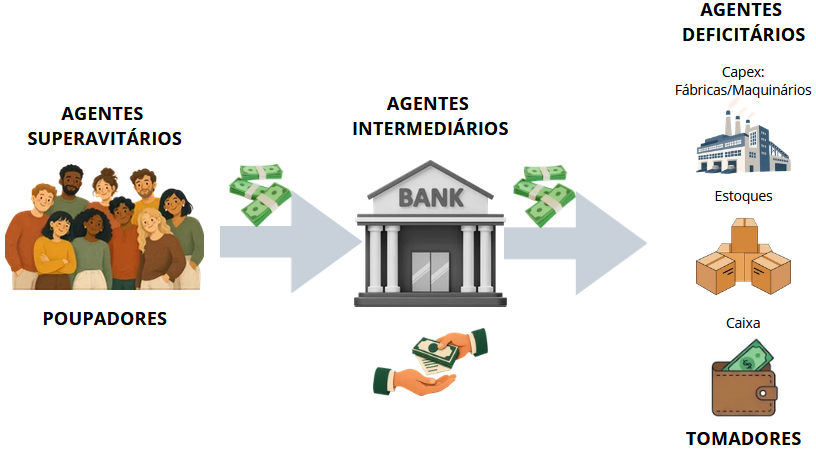
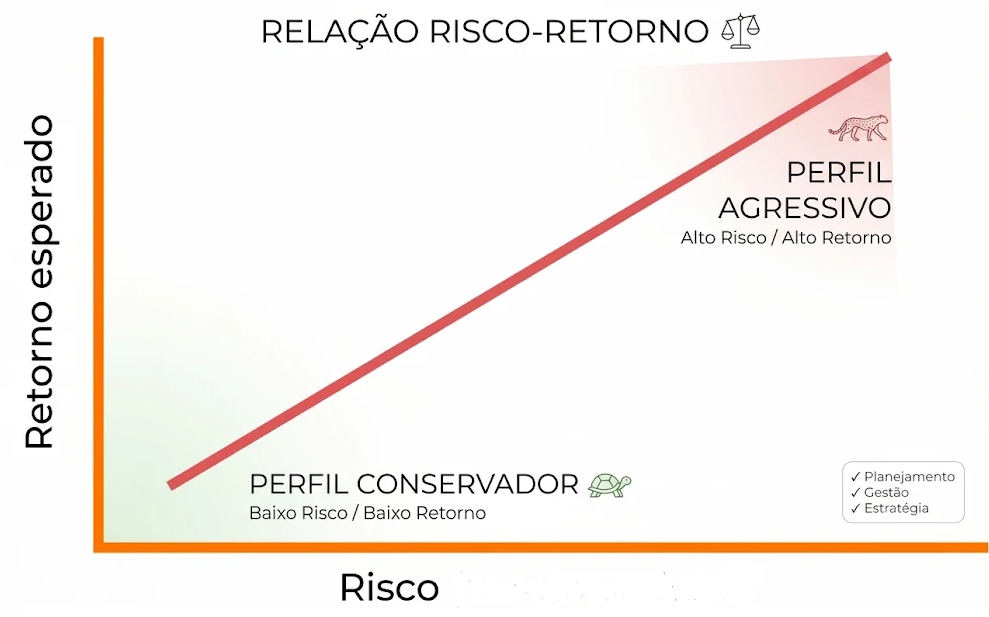
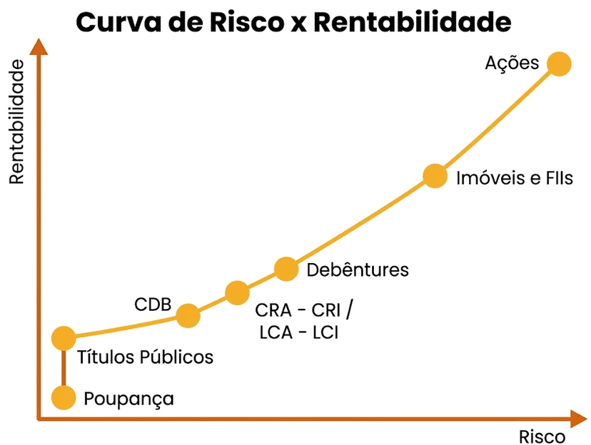

Unidade I – Introdução ao Mercado Financeiro
Esta unidade apresenta os conceitos básicos do mercado financeiro e a estrutura do Sistema Financeiro Nacional (SFN).
1. Agentes econômicos
São os participantes do mercado financeiro, que tomam decisões "maximizadoras de utilidade" conforme suas condições e necessidades. A atuação de cada um determina os fluxos de poupança e investimento.
| Agente | Posição financeira | Função | Objetivo |
|---|---|---|---|
| Superavitários | Excedente de recursos | Aplicam recursos | Rentabilidade |
| Deficitários | Necessidade de recursos | Captam recursos | Financiamento |
| Intermediários | Equilíbrio entre oferta e demanda | Intermedeiam recursos | Eficiência e estabilidade do sistema |
- Superavitários: famílias que poupam, fundos de investimento. Ofertam capital em troca de retorno superior ao custo de oportunidade (juros, dividendos).
- Deficitários: empresas que precisam de crédito, famílias endividadas, governo que emite títulos da dívida.
- Intermediários: bancos comerciais, corretoras, cooperativas de crédito. Reduzem custos de transação, diluem riscos, reduzem assimetrias de informação e convertem poupança em investimento.
2. Mercados
O mercado financeiro divide-se em quatro grandes segmentos: mercado monetário, mercado de crédito, mercado de capitais e mercado de câmbio.
Mercado Monetário
É o mercado onde são negociados títulos de curto e curtíssimo prazo e alta liquidez. As referências centrais de taxas de juros derivam desse mercado, como a taxa SELIC (operações com títulos públicos no Banco Central) e a taxa DI/CETIP (operações de curto prazo entre bancos).
Principais atores: Banco Central do Brasil, bancos comerciais e de investimento.
Mercado de Crédito
É o mercado onde são negociados empréstimos e financiamentos (o banco capta do agente superavitário e empresta ao deficitário, cobrando um spread bancário pelo risco de inadimplência).
Principais atores: Bancos comerciais, bancos múltiplos, cooperativas de crédito e sociedades de crédito.
Nota: Spread bancário é a diferença entre a taxa de juros cobrada pelos bancos e a taxa de juros oferecida pelos agentes superavitários.
Mercado de Capitais
É o mercado voltado ao financiamento de médio e longo prazo do setor produtivo e das decisões de investimento em ativos permanentes. Conecta investidores diretamente a empresas e governos, permitindo a captação de recursos sem a intermediação bancária tradicional.
Principais atores: Empresas S/A de capital aberto, bolsas de valores (B3), corretoras e distribuidoras de valores (CTVM/DTVM), fundos de investimento e a CVM (Comissão de Valores Mobiliários) como órgão supervisor.
Nota: Negocia títulos de renda variável (ex.: ações) e de renda fixa (ex.: debêntures, CRI, CRA).
Mercado de Câmbio
Encaixa-se na negociação e troca de moedas estrangeiras por moeda nacional, viabilizando transações internacionais de comércio (importação e exportação) e fluxos de capitais estrangeiros. Envolve operações de compra e venda de moedas estrangeiras à vista e no mercado futuro.
Principais atores: Banco Central do Brasil, bancos comerciais, corretoras de câmbio e empresas importadoras/exportadoras.
Confira mais: Informações sobre o Sistema Financeiro Nacional
3. Renda, consumo e poupança
- Consumo (presente): despesa com bens e serviços para satisfazer necessidades básicas ou sofisticadas.
- Poupança (consumo futuro) = Renda − Consumo: o consumo adiado, a parte da renda não direcionada ao consumo imediato.
Investimentos
Para o poupador, é a destinação dos recursos poupados (aplicações que gerarão retorno). Para o tomador, os intermediários ofertam crédito aos agentes deficitários, que o empregam em ativos de longo prazo (projetos, capex), estoques, caixa etc.

4. Rentabilidade e liquidez
Rentabilidade: relação entre o resultado obtido e os recursos aplicados (Assaf Neto, 2019), isto é, o retorno esperado ou obtido. É diretamente associada ao risco (volatilidade).
Liquidez: facilidade de converter um ativo em moeda, com rapidez e baixo custo de transação (Gitman; Zutter, 2012).
Por isso a decisão deve considerar retorno esperado, liquidez e risco, de acordo com os objetivos e as estratégias do investidor. No gráfico das aulas, poupança e Tesouro Selic têm alta liquidez e baixa rentabilidade; imóveis e obras de arte, o inverso.


5. Moeda e quase-moeda
Moeda: ativo universalmente aceito como meio de troca. Funções: meio de troca, unidade de conta e reserva de valor.
Quase-moeda: ativos de elevada liquidez, rapidamente convertidos em moeda, mas não aceitos diretamente como meio de pagamento. Geram remuneração. Ex.: poupança, CDBs, fundos de curto prazo, títulos públicos.
| Aspecto | Moeda | Quase-moeda |
|---|---|---|
| Natureza | Meio de pagamento universal | Ativo financeiro conversível em moeda |
| Liquidez | Máxima | Alta, mas exige conversão |
| Emissor | Banco Central | Instituições financeiras |
| Funções | Troca, unidade de conta, reserva de valor | Principalmente reserva de valor |
6. Taxa de juros
É o preço de troca de ativos disponíveis em momentos diferentes do tempo. Pela preferência pela liquidez, rendimentos de prazos mais longos devem ser superiores, pois incorporam remuneração pelo risco (maior prazo, maior risco). A taxa de juros é a expressão monetária do risco e da rentabilidade de um ativo.
- SELIC: Serviço Especial de Liquidação e Custódia (títulos públicos); sua taxa é a taxa básica de juros da economia (Banco Central).
- CETIP: central de custódia e liquidação de títulos privados (B3).
7. Sistema Financeiro Nacional (SFN)
O SFN se organiza em três subsistemas: normativo, de fiscalização (supervisão) e de intermediação (operação).
| Segmento | Normativo | Supervisor | Operadores |
|---|---|---|---|
| Moeda, crédito e câmbio | CMN | Banco Central (BC) | Bancos, cooperativas de crédito, corretoras e distribuidoras, administradoras de consórcios, instituições de pagamento |
| Capitais | CMN | CVM | Bolsa de valores, bolsa de mercadorias e futuros |
| Seguros privados | CNSP | Susep | Seguradoras, resseguradoras, previdência aberta, capitalização |
| Previdência fechada | CNPC | Previc | Fundos de pensão |
Fonte: Banco Central do Brasil.
Questões – Unidade I
Sua opinião é importante
Ajude a melhorar este material respondendo a um formulário rápido sobre esta unidade.
Responder formulário 📝